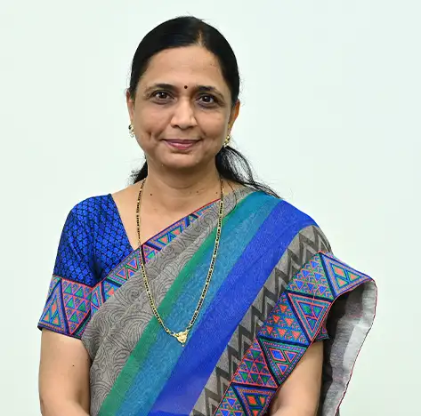

Dr. Vinaya Vijay Gohokar
Professor

Professor
With over 30 years of experience in teaching and research in Electronics and Communication Engineering, Dr. Vinaya Gohokar is a highly accomplished academician. She completed her graduation in Electronics and Telecommunication Engineering from S.G.B. Amravati University in 1991, and went on to obtain an M.S. in Electronics and Control from B.I.T.S, Pilani. She received her Ph.D. in Electronics Engineering from Amravati University in 2009. Dr. Gohokar has published over 60 research papers in international journals and conferences, showcasing her expertise in various areas of electronics and communication engineering. Her research interests include IoT, computer vision, and signal processing, and she has successfully guided 6 Ph.D. scholars in these domains. Dr. Gohokar's contribution to the field has been recognized by several funding agencies, including DST and AICTE, with grants worth 60 lakhs to her credit. Her passion for research and teaching has made her a respected figure in the academic community, and she continues to inspire the next generation of engineers and researchers.
: IoT, Computer Vision, Edge Intelligence, Embedded System
Profiles